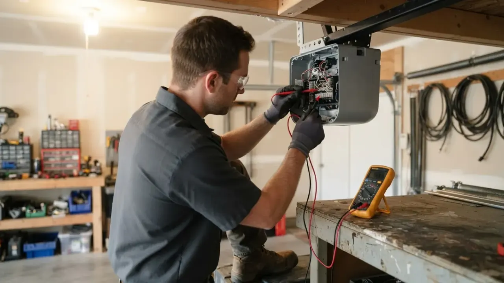

Same-day torsion and extension spring swaps across Hillsborough County
Garage Door Spring Replacement in Tampa Done Right the First Time
When a spring snaps, your door becomes a 200-pound dead weight. Our garage door spring replacement in Tampa gets it moving again the same day, usually within two to four hours of your call. We stock torsion springs for LiftMaster, Chamberlain, Genie, and Clopay doors, so we are not waiting on a warehouse. If your door is stuck halfway open or your opener is running but not lifting, call us at +1 (773) 915-6384.
Live dispatcherUpfront optionsBacked workmanship
The basics
What Is Garage Door Spring Replacement?
Garage door spring replacement means removing a broken or worn spring and fitting a new one matched to the weight, size, and cycle rating of your door. Springs wear out after thousands of open-and-close cycles, and they usually fail with a loud bang and a door that will not lift. You need replacement when a spring has snapped, the door sags on one side, or the springs are visibly stretched, rusty, or past their expected life. Both springs are normally replaced as a pair so the door stays balanced and the older spring does not fail weeks later.
What's included
What Our Spring Replacement Service Includes
Every spring job is quoted as a package so you know what is covered before we start. If we find something outside the scope, like a bent track or a dead opener, we quote it separately and you decide. Here is what comes standard on a Tampa spring replacement.
New Matched Springs
Torsion or extension springs matched to your door's weight, height, and cycle rating. We verify wire gauge and inside diameter against the manufacturer spec, not a generic chart, so the door balances correctly on the first wind.
Full Safety Inspection
We check galvanized steel cables, cable drums, hinges, rollers, and tracks for damage caused by the spring failure. A snapped garage door cable or a door knocked off track gets flagged and quoted before we proceed.
Correct Winding and Balance
Springs wound with garage door torsion spring winding bars to the exact turn count, then the door is balanced and tested at waist height. We cycle it a dozen times and adjust opener travel and photo eye sensors before we call it done.
Lubrication and Cleanup
Torsion shaft, hinges, and rollers get garage door lubricant, and we sweep up every metal shaving and old spring fragment. Your garage floor is cleaner when we leave than when we arrived.
Written Warranty
Parts and labor are warrantied for two years on the springs we install. We leave the cycle rating and install date on your invoice so the next technician, or the next owner, knows exactly what is up there.
Service overview
What Garage Door Spring Replacement in Tampa Actually Involves
Garage door spring replacement in Tampa is the removal and safe disposal of your failed torsion or extension springs, followed by installing new springs matched to your door's exact weight, height, and cycle rating. A standard two-car door runs one or two torsion springs on a steel shaft above the tracks, wound tight against garage door cable drums. We measure wire gauge, inside diameter, and length, then wind the new springs with garage door torsion spring winding bars to the correct turns. Get the count wrong and the door slams. Get it right and it glides.
Springs fail here for a reason. Tampa's humidity and salt air corrode galvanized steel faster than dry climates, and a door that cycles six to eight times a day will burn through a 10,000-cycle spring in roughly four to six years. When a broken torsion spring leaves your car trapped inside, you need a garage door spring replacement services Tampa homeowners actually answer the phone for. We run same-day garage door spring replacement Tampa-wide, including South Tampa, Westchase, and New Tampa, seven days a week.

How we workWe verify the cause, compare realistic options, and confirm the repair before we leave.
The service timeline
How Our Spring Replacement Process Works
The process flexes to the condition, but these checkpoints keep decisions clear.
Phone Triage
You call +1 (773) 915-6384 and describe what the door is doing. A snapped spring usually makes a loud bang, and the door will feel extremely heavy or hang crooked. We ask the door size, brand, and whether it is torsion or extension, then quote a range before we roll. Most calls get a technician within two to four hours.
On-Site Safety Check
The tech disconnects the opener, clamps the torsion shaft, and checks the garage door tracks, cables, and hinges for collateral damage. A snapped garage door cable or a door knocked off track changes the job, and we tell you before we start, not after. This takes about 15 minutes.
Spring Matching
We measure wire gauge, inside diameter, and spring length, then pull the correct torsion springs from the truck. Doors here run everything from 0.207 to 0.250 wire, and guessing is how doors get slammed. If your door uses extension springs, we match those too and add safety cables.
Winding and Testing
Using garage door torsion spring winding bars and a garage door torque wrench, we wind the new springs to the manufacturer's turn count, usually 7.5 to 8.5 quarter turns for a 7-foot door. Then we cycle the door a dozen times, check the balance, and adjust the opener travel and photo eye sensors.
Walkthrough and Warranty
We hand you the old springs, show you the new cycle rating, and walk the door up and down with you watching. You get a written warranty on parts and labor. Total time on a standard two-spring swap runs two to four hours, and we clean up every metal shaving before we go.
Tools & methods
Tools and Methods We Use on Every Spring Job
Purpose-built equipment, used by trained technicians, so the job is done accurately the first time.
Garage Door Torsion Spring Winding Bars
Steel bars used to wind and release torsion springs safely. We never use screwdrivers or makeshift tools, which slip and cause serious injuries.
Garage Door Torque Wrench
Verifies the winding tension and balance so the door holds position at waist height instead of drifting open or closed.
Garage Door Cable Drums and Winding Cones
We inspect and replace worn drums and cones that would otherwise chew through new galvanized steel cables within months.
Garage Door Roller Removal Tool
Lets us swap steel garage door rollers for nylon ones without bending the track, which keeps the door running straight.
Garage Door Sensor Alignment Tool
Realigns photo eye sensors after the door has been cycled and the opener travel reset, so the safety reverse works on the first try.
Use cases
When Tampa Homeowners Call Us for Springs
These examples show how the service framework adapts rather than forcing every call through one repair.

Extension Spring Failure in Town 'N Country
An older extension spring system snapped and whipped across the garage, denting a panel and leaving the door stuck halfway open. The homeowner was worried about the exposed cable and would not let the kids near the garage. → How we handle it: We install new extension springs with safety cables, replace the dented garage door panel, and realign the tracks.
Noisy Double Door in Westchase
A double door in Westchase had been popping and banging. The springs were past their 10,000-cycle rating, the steel rollers were flat-spotted, and the opener was straining on every cycle. → How we handle it: We upgrade to 25,000-cycle torsion springs, swap all rollers to nylon, and lubricate the torsion shaft and hinges.
Problems we solve
Spring Problems We Fix Across Tampa
Most spring calls fall into a handful of patterns. Here is what we see, what happens if you ignore it, and how we handle it.
Broken torsion spring leaves the car trapped
We replace the broken torsion spring and its matched partner in one visit, usually within two to four hours of your call. The door is rebalanced and cycled a dozen times before we leave, and we show you the old springs so you can see the break.
Garage door stuck halfway open after a snap
We disconnect the opener, clamp the torsion shaft, and secure the door before touching the springs. Once the new springs are wound, we check the tracks with a garage door track bender and reset the opener travel limits so the door completes a full cycle.
Opener running but not lifting the door
We diagnose whether the spring, the cable, or the opener is the root cause. In most Tampa cases the spring failed first and the opener is the victim. We fix the springs, then repair or replace the opener only if it is actually damaged.
Noisy, banging door on every cycle
We test the spring tension, replace springs that are past their cycle rating, and swap noisy garage door rollers for nylon ones. Lubricating the torsion shaft and hinges quiets the door and slows the corrosion that shortens spring life in Tampa's salt air.
Pricing process
What Spring Replacement Costs in Tampa
$180 - $450 depending on spring count, wire gauge, and collateral damage
Number of Springs
Most double doors use two torsion springs, and replacing both at once costs less than two separate service calls. Single-spring doors cost less, but we still check the cable drums and balance the door.
Wire Gauge and Length
Heavier doors need thicker wire, which costs more per spring. A 0.250 gauge spring for a tall insulated door runs higher than a 0.207 for a basic single door, and we always match to the door's actual weight.
Cycle Rating
Standard 10,000-cycle springs are the baseline. Upgrading to 25,000-cycle springs adds $40 to $90 per spring and is worth it on doors that cycle six or more times a day, which is most Tampa households.
Cost factors at a glance
| Cost factor | What affects the price |
|---|---|
| Typical range on this page | $180 - $450 depending on spring count, wire gauge, and collateral damage |
| Number of Springs | Most double doors use two torsion springs, and replacing both at once costs less than two separate service calls. |
| Wire Gauge and Length | Heavier doors need thicker wire, which costs more per spring. |
| Cycle Rating | Upgrading to 25,000-cycle springs adds $40 to $90 per spring and is worth it on doors that cycle six or more times a day, which is most Tampa households. |
Ranges are the ones stated on this page; you get a written estimate before work starts.
Customer reviews
What Tampa Customers Say About Our Spring Work
★★★★★
“Heard a bang at 6:40 a.m. and my door would not budge. Called at 7, tech was here by 9:15 with the right torsion springs for my Clopay door. He showed me the old springs, explained the wire gauge, and had the door balanced in about three hours. Price matched the phone quote. No upsell on the opener, which I appreciated.”
★★★★★
“Both springs on our double door snapped within a week of each other last year, so this time I asked them to replace both at once. They wound the new ones, replaced a frayed cable, and greased the rollers. The door is quieter than it has been in years. They left the old springs and a warranty sheet on the workbench.”
★★★★★
“I manage six rental units near Channelside and spring failures are a constant. These guys answer the phone, show up when they say, and invoice what they quoted. Last job was a snapped extension spring on a Wayne Dalton door, done in under two hours. Tenants stopped calling me at night.”
Book with confidence
What to Look for Before You Book
Before you book any garage door company, a few simple checks can save you from a poor job and a surprise bill.
- Ask for the licence number before work starts, and check that it matches the name on the quote.
- Read recent reviews and look for comments about punctuality, pricing, and follow-up, not just the star rating.
- Get the price in writing before work starts, including parts and labour, and ask what happens if more work is found once the door is open.
- Ask what warranty covers the parts and the work, and for how long, and get it in writing.
- Check that the technician arrives in a marked vehicle and can say who they are and which company sent them.
- Ask whether the price includes a safety test and a walkthrough at the end, so you can see the door working before they leave.

How much does garage door spring replacement cost in Tampa?
Most single-spring jobs run $180 to $350, and a two-spring torsion replacement runs $250 to $450 installed, with 2026 pricing in this area. Extension spring swaps land in the same range. Cost climbs if the door needs new galvanized steel cables, garage door cable drums, or rollers, and drops if you replace both springs at once instead of paying two call-out fees.
How long does garage door spring replacement take in Tampa?
A standard two-spring torsion replacement takes two to four hours from arrival to final cycle test. That includes measuring, winding with garage door torsion spring winding bars, balancing the door, and resetting your opener travel and photo eye sensors. Extension spring jobs usually finish in 90 minutes to two hours. We do not rush the winding count, because that is where doors get dangerous.
Should I replace both garage door springs in Tampa?
Yes, if both springs were installed at the same time. Springs are manufactured in matched pairs and wear at the same rate, so when one snaps, the other is usually weeks from failing. Replacing both during one visit costs less than two separate calls and prevents a second stranded-car morning. We check the surviving spring's wire gauge and cycle count before recommending it.
Who replaces garage door springs in Tampa?
Call a garage door contractor with the right winding bars, not a general handyman. Torsion springs store lethal energy, and an incorrect winding count can send the door crashing. We handle torsion and extension springs for LiftMaster, Chamberlain, Genie, Clopay, and Wayne Dalton doors across Hillsborough County, with same-day and 24/7 availability.
How do I know what size spring my garage door needs in Tampa?
You should not try to work this out yourself, since the spring has to match the weight and height of your door exactly. The technician measures the door, weighs it, and checks the wire size, coil count, and length of the old spring to choose the right replacement. A spring that is too weak will not lift the door, and one that is too strong will slam it open. Matching the spring is part of the job, and it is done on site.
Can I upgrade to high-cycle springs when replacing my garage door springs in Tampa?
Yes, and it is often worth it for a door that is used several times a day. Standard springs are rated for about 10,000 cycles, while high-cycle springs are rated for 20,000 cycles or more, so they last roughly twice as long. They cost more up front, but for a busy household the upgrade usually pays for itself by avoiding an earlier replacement. The technician can quote both options before starting.
Why did my garage door spring break in Tampa?
Springs break because they wear out. Every open and close flexes the metal, and after thousands of cycles it fatigues and snaps, usually with a loud bang. Rust from Tampa humidity speeds this up, as does a door that is out of balance, since the spring then works harder than it should. A broken spring is not a sign that the door was misused, it is a normal wear item, and regular lubrication can slow the rust but cannot stop the metal from fatiguing.
Related services
Related Garage Door Services

Garage Door Repair
A snapped spring often takes a cable or roller with it. Our garage door repair crews handle the collateral damage in the same visit, so you are not booking a second appointment for a door that still will not close.
Garage Door Spring Repair
Not every spring needs replacing. If yours is intact but the door is unbalanced, our spring repair service re-tensions and rebalances it, which is faster and cheaper than a full swap when the wire is still sound.
Garage Door Opener Repair
Running an opener against a broken spring burns out the gears and motor. If your opener is running but not lifting, we repair the opener after the springs are fixed, so the new parts are not stressed by a dead door.Ready when you are
Get Your Garage Door Spring Replacement in Tampa Today
A broken spring will not fix itself, and every cycle you run against it risks your opener and your safety. We are a garage door contractor (licence number available on request) with same-day and 24/7 availability across Hillsborough County. Call +1 (773) 915-6384 for a price range in under five minutes.
Talk with the local team
Request Garage Door Spring Replacement
Call, text or email and a real person answers, day or night. Tell us what the door is doing and we will give you a price range on the spot plus the soonest arrival window. Most calls placed before mid-afternoon get a same-day visit anywhere in Hillsborough County.